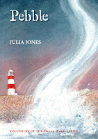
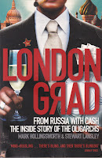
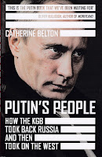
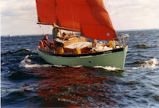
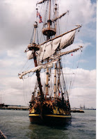
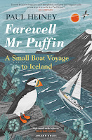

{kind=link}
‘I love anything with the word ‘north’ in it. I adore the air that blows in northern parts for its freshness and its tang. I can sup on it as if it were a glass of the finest claret. The true north wind is the tastiest of all and best when it is close to frigid.’
Heiney writes of the ‘spirituality to be
found by heading in the direction of north.’
Is this something that Donny will experience? I’m not sure. In 2018, at
the end of Pebble, I left him on a Russian superyacht (she was
originally an Arctic survey vessel but he didn’t know that then). MY Raisa
was heading north and east as she set a course to hurry away from the Suffolk
coast and back to her own home waters. But where? Will her destination be the Baltic or the
Barents Sea? Kaliningrad or Murmansk? Both have been mentioned. Donny has
simply signed on as the third hand because he realises the two older men on board need his help and there’s something there, somewhere
in the northern waters, that he needs to discover. 
{kind=link}
Pebble’s fictional year
was 2012. Vladimir Putin had recently been re-elected and was using his renewed
mandate to force the return of fictional oligarch Arkady Ivanov and his money to
Russia. In Pebble Arkady seemed mercurial – one moment spitting out his
chicken soup and accusing his staff of poisoning him; later charming and solicitous,
in love with his disabled wife and truly concerned for the fate of his former
crewmember Dimitri who is discovered to have died from radiation poisoning. By
the end of the book the reader may have begun to admire Arkady for his bravery
and patriotism, yet he’s a self-confessed former Intelligence officer, a
long-term associate of Putin and how can anyone that rich be honest? Presumably
it’s something Donny will need to find out – if Arkady doesn’t die first.
Currently he’s been seriously injured by the treachery of the SVR agent Dzerzhinsky,
who is definitely dead and his body removed. (Good.)

{kind=link}
The group went on to Moscow, Murmansk, Ekaterinburg
and a Yukos-owned oilfield in Siberia. When Francis came home to Essex, I
enjoyed his tales of the high life but didn’t have the insight to see the trip
in any wider context. Now I feel deeply envious – especially of the time in
Murmansk, where they dined with an Admiral of the Northern Fleet (a title
fictional Arkady has awarded himself by the end of Pebble.) Murmansk was
a frequent destination for the WW2 Arctic Convoys – I’d love to visit for that
connection alone. In 2001 the immensely rich Khodorkovsky
(who has described himself as a ‘robber-baron’ according to the Londongrad
authors) was becoming more articulate about the need for change in Russia. Sponsoring
the journalists’ trip was part of a positive agenda which would lead the
oligarch to confrontation with President Putin, the confiscation of his company
and most of his wealth and ten years in prison. Later in 2001 he established the
Open Russia foundation: then re-established it in 2014 after his release from
prison. This year, 2021, the foundation has had to cease operations in Russia
to protect its members from
criminal prosecution and the risk of being imprisoned.

{kind=link}
Catherin Belton is a
financial specialist and much of the detail of acquisitions, shell companies,
kickbacks and slush funds is beyond me. She is also a good and vivid writer. The
description of St Petersburg in the 1990s, when Putin was a key member of the
city administration (1990-1996) is brilliant and shocking in equal measure. Her
chapter ‘The Tip of the Iceberg’ begins with a description of the port area
where ‘a tangle of cranes and containers juts out across the elegant facades of
pre-Revolutionary palaces […] far out on the western edge, a concrete jetty
leads to the place sometimes called the ‘Golden Gates’, a concrete sprawl of
oil-storage facilities that makr St Petersburg’s most strategic outpost, the
oil terminal that was the battleground forsoe of the 1990s most vicious bandit
wars.’ (p84)
 |
| Peter Duck leaving St Petersburg summer 1998 |
{kind=link}
This, I realise,
overlaps with the period that Peter Duck was also living in St
Petersburg with her then owners Greg and Ann Palmer. Although in 1996 Ann was
still working as a teacher in Essex, Greg, a historian, had been loaned by the
British Executive Service Overseas to the Shtandart Project and Peter Duck had
travelled with him. The project was the building of a replica of Peter the
Great’s Shtandart first built in 1703 on the Svir River which
connects Lake Onega to Lake Lagoda, northeast of St Petersburg. The c20th Shtandart
was built in the former Admiralty shipyard in the city itself and Greg had
a job teaching within the Philological Faculty of the University. I’m not sure exactly where Peter Duck was moored at this
time – I only know that she was ‘in the marshes’. Those are the foundations of
the city, as it was conceived by Tsar Peter. ‘Thousands of serfs toiled and
died to realise his vision of stately Baroque mansions and elegant canals
rising out of the freezing and muddy marshes.’ (Belton p84)
 |
| Shtandart arriving in Harwich Aug 2000 |
{kind=link}
The Shtandart Project, with its deliberate re-evocation of the acceptable face of the pre-revolutionary era was one that could only have existed in the post-Glasnost period. It was a co-operative, Western-friendly enterprise – after Greg’s untimely death in 1998, Ann continued living in the city and working to develop their media relations. When Shtandart was finally launched in 2000 she embarked on a recreation of Tsar Peter’s Grand Embassy 1697-8, aiming to strengthen Western alliances. Peter Duck had already returned. She and I met the Russian frigate (and Ann Palmer) at Harwich.
Is it perhaps hard to imagine such a co-operative project happening in the current phase of UK – Russian relationships? I find it salutary to remind myself that it did happen in St Petersburg of the 1990s, alongside the graft, drug-trafficking and violence described by Catherine Belton as endemic in the city at the time – or at least the port area. Most of us respectable citizens, going about our daily work, absorbed in private projects and our family lives are blithely unaware of murkier undercurrents.
As well as the injured
oligarch, Arkady Ivanov, the third person with whom Donny was left at the end
of Pebble, on board MY Raisa, is called George. He’s an enigmatic figure
with a splendid bushy beard and a heart condition. When my characters first met him he was
sitting on a white plastic chair observing the activity in Lowestoft harbour –
rather as Arthur Ransome’s character 'Peter Duck' is first encountered watching
from a bollard. George seemed benign – he was certainly shrewd – but by the end
of the book he’s been discovered to be playing some deeper game.

{kind=link}
It's a long
voyage, northbound, in both fact and fiction.